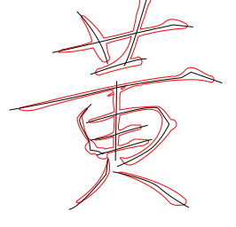
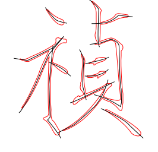
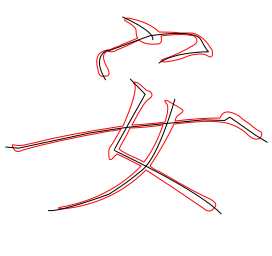

lab08 漢字書寫 (鉛筆字) (毛筆字也OK!) Path Animation
限定使用 D3.js，參考以下影片。
Animate path in D3
"Self-Drawing" SVG
How to transition a path in d3.js
How SVG Line Animation Works
使用 SVG 將圖片做成動畫
何一非
展示區 (姓名)
Drag and Drop 展示區 (接收任何SVG)
  